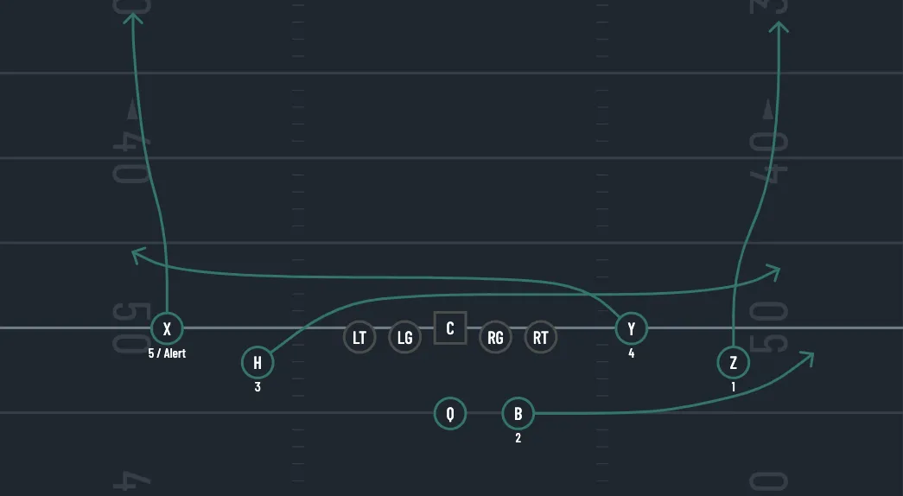
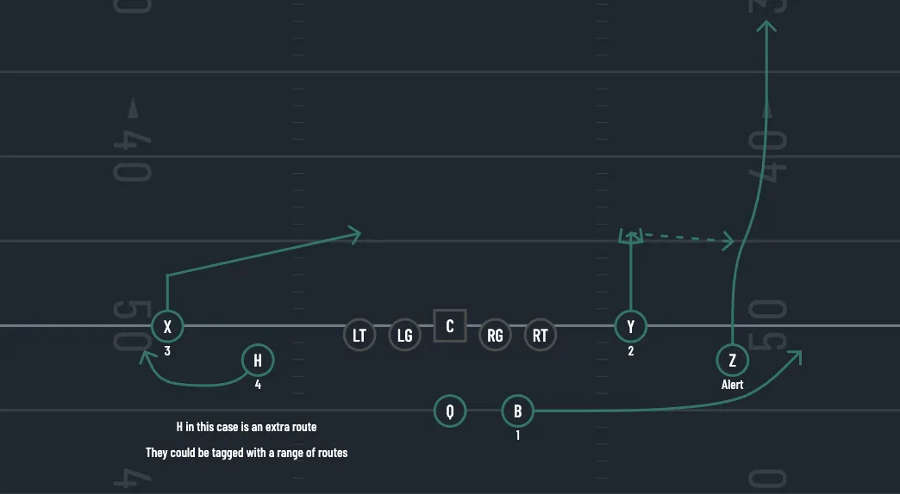
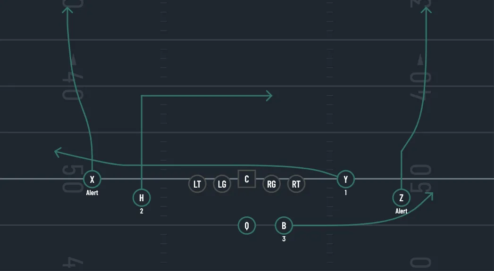
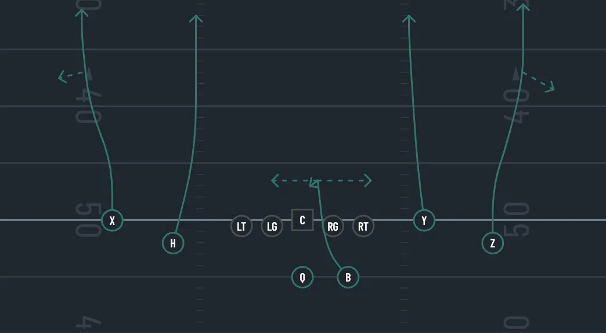
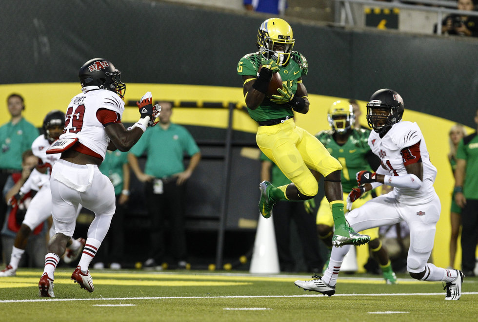
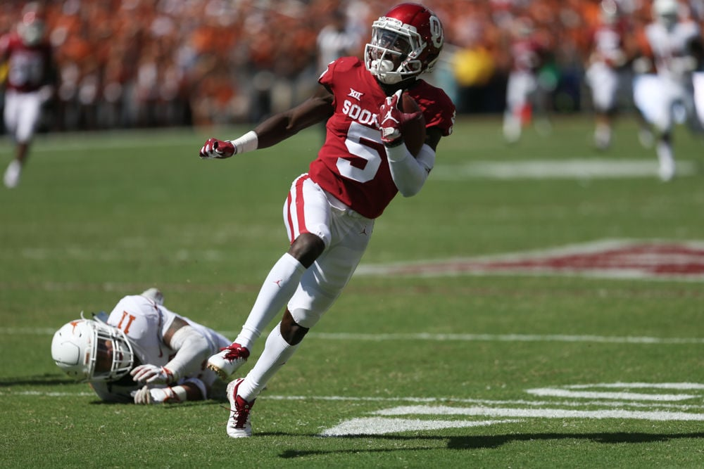
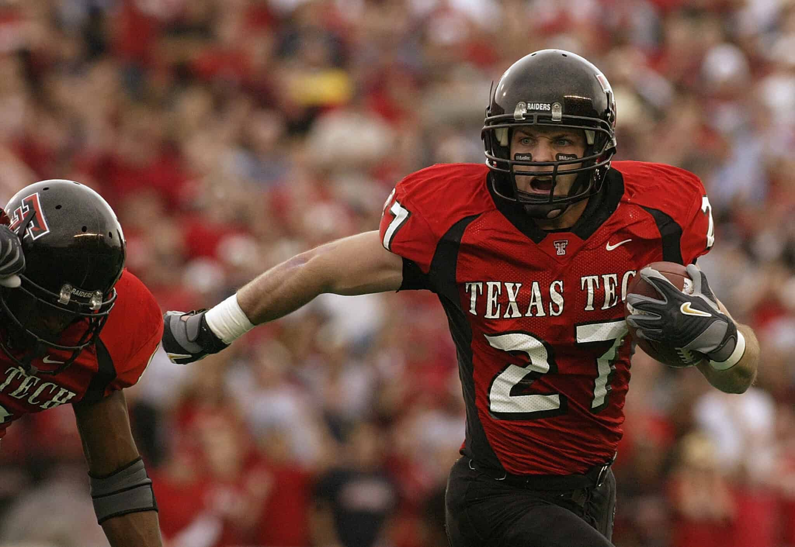
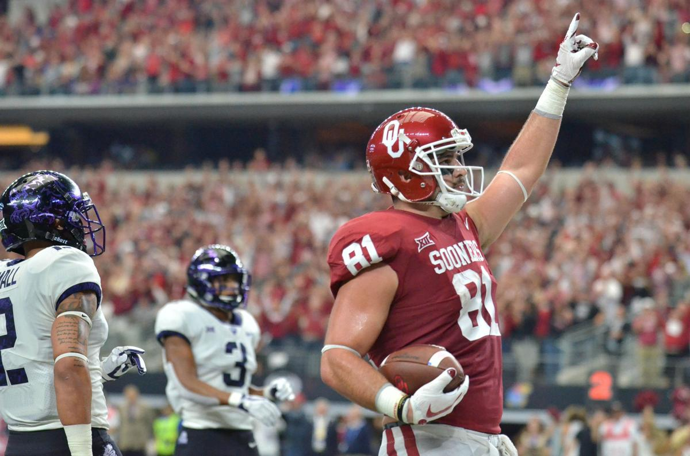
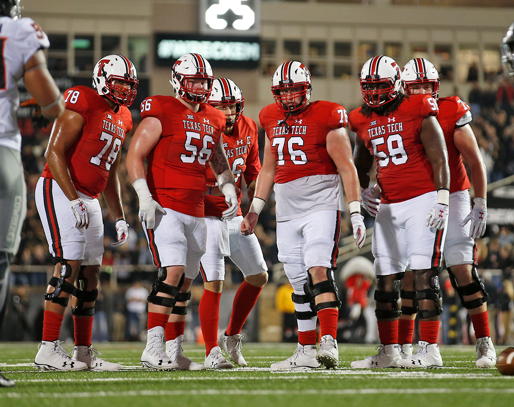

Air Raid Offense
Introduction
The Air Raid offense, pioneered by the innovative mind of Mike Leach, has revolutionized college football. His approach to simplifying the game and emphasizing execution has made this offense one of the most effective and widely adopted systems in the sport.
Philosophy of the Air Raid
The Air Raid offense is built on the philosophy of mastering simple concepts and executing them to perfection. It's about repetition, consistency, and making the most out of straightforward plays.
Pros and Cons
Pros:
- High-scoring potential
- Simplifies decision-making for players
- Adaptable to different player strengths
Cons:
- Can be predictable if not varied
- Requires precise execution
- Relies heavily on the passing game, which can be affected by weather conditions
Keeping this scheme as simple as possible is crucial. The Air Raid is about mastering simple concepts and executing them early and often.
Formations
In the Air Raid offense, formations are kept simple to maximize execution and versatility. The three primary formations used are 2x2 (Ace Right/Left), 3x1 (Early/Late), and 3x2 (Spread).
Formation Details
- 2x2 (Ace Right/Left or Spread): This is our base formation, providing a balanced look that can easily transition into various play types.
- 3x1 (Early/Late or Trey Open): This formation puts three receivers on one side, creating mismatches and spreading the defense thin.
- 3x2 (Spread): This formation maximizes the spread concept, using five receivers to stress the defense horizontally.
Base Plays
The key to the Air Raid offense is a set of base plays that are simple yet highly effective. These plays form the foundation of the offense, allowing for consistency and mastery.
- 92 (Mesh): The Mesh concept involves two receivers running crossing routes underneath, creating natural picks and mismatches.
- 618 (Stick): The Stick play is a quick-hitting concept designed to exploit short zones and provide an easy read for the quarterback.
- 91 (Shallow Cross): The Shallow Cross involves a shallow drag route across the field, giving the quarterback a quick option against man or zone coverage.
- 6 (Four Verticals): Four Verticals is a deep passing concept with all four receivers running vertical routes to stretch the defense vertically.
- 95 (Y-Cross): The Y-Cross play involves the Y receiver running a deep crossing route, often creating big play opportunities against various coverages.
The Run Game
In the Air Raid offense, the traditional run game is often replaced with RPOs (Run-Pass Options) and screens. These plays keep the defense off balance and complement the passing attack.
Screen Plays
- Early/Late Ram/Lion (Trey Open Cross Screen): Fast-hitting screens designed to quickly get the ball to the receiver in space.
- Ace Randy/Larry (Spread WR Screen): Utilizes wide receiver screens to attack the perimeter.
- Early Rita/Lisa (Slow Screen) or Trey Open WR Mid Screen: Slow-developing screens that act as change-ups to stagger the defense's timing.
RPO Plays
- Early Trey Open HB Strong RPO Peek Hitch (Y-Stick): An RPO that pairs a run option with the Y-Stick concept, giving the quarterback multiple reads.
- Spread RPO Peek Slant: Combines the inside run with a quick slant, allowing for flexibility based on defensive alignment.
Base Play Details
These will be our base plays. I will add more options down the road along with more "2nd and short big shot plays" and red zone zone options
92 (Mesh)
QB Reads: Look for the softest corner and attacks that side. Work eyes from Z-H-F. The OLB to the playside will tell you what to do with the ball. If the OLB bails to the corner, throw the shallow or the swing. If the OLB sits, Throw the corner in rhythm or the swing. If the OLB flies to the swing, throw the corner in rhythm or the shallow. Z post is the most common tag on 92. This is great tag to attack single high defenses. The Z will run a post that can flatten out if the middle field safety bails deep. The QB has his eyes on the Sam and will bang the post behind him if he flies to the flat or sits on the mesh.
618 (Stick)
QB Reads: Check slant side first. The QB must commit to a side. They can throw either side of the formation based on leverage. Read the flat defender stick to shoot. Remember space and leverage. Can throw the Post Vs. 2 high or throw the wheel vs 1 high.
91 (Shallow Cross)
QB Reads: Read shallow-dig-F. In a two deep shell, look for the safety to attack the dig in order to hit the post
6 (Four Verticals)
2x2 Rules:
Everything is determined by leverage
Look for press corners first
Read outside - inside - F
If no corner is pressed, check to a tagged route on best match-up.
3x1 Rules:
Look for a pressed corner or a tagged route based on leverage
Read Y - H - F
The QB MUST COMMIT to a side once he has made his decision. Be decisive, and confident!
F checks his release and settles in the middle of the field that the LB's have vacated. He can be put on either side of the QB depending on pass protection.
95 (Y-Cross)

QB Reads: Read vertical-out-Cross-dig. 95 out of 3x1 is a good switch up from 2x2. The corner dig route behind the cross is almost always open against 2 high defenses. The quick out to the play side can be a good look against man coverage.
Player Profiles
Each position in the Air Raid offense has specific attributes and responsibilities that are crucial for the scheme's success. Below are the ideal player profiles for each position:
Quarterback (Q) - Improviser
Attributes: Throw on Run, Quickness
Responsibilities: The QB needs to be adept at making quick reads and decisions, often on the move. Mobility and accuracy while throwing on the run are essential.
Comps: Kyler Murray, Gardner Minshew ll

Running Back (F) - Receiving Back
Attributes: Good Hands, Good Pass Blocker, Great In Open Space
Responsibilities: The RB should excel in catching passes out of the backfield and running routes. Pass-blocking skills are also a nice touch to protect the QB
Comps: Joe Mixon, D'anthony Thomas
WR 1 (X) - Physical
Attributes: Best Possession WR, Solid Release
Responsibilities: Always lines up on the line of scrimmage. This receiver is the primary possession target, reliable in catching and moving the chains.
Comps: Michael Crabtree, Julio Jones

WR 2 (Z) -Deep Threat
Attributes: Best overall deep threat, Solid Release, Deep Route Run, Spectacular Catch
Responsibilities: This receiver is the primary deep threat, capable of making big plays downfield.
Comps: Hollywood Brown, Brandin Cooks
WR 3 - Slot (H)
Attributes:Acceleration, route running
Responsibilities:
This receiver is used for quick routes and making plays in space, utilizing their speed and elusiveness.Comps: Wes Welker, Hunter Renfrow
SLR 2 - Slot
Attributes: This receiver is often a developmental player, May develop into a H, needs to be quick and elusive
Responsibilities: This player provides depth and has the potential to develop into a primary slot receiver. Replaces the Y tight end in spread on occasion
Comps: Nelson Spruce

Tight End (Y) - Vertical Threat
Attributes: More elusive TE with Run After Catch skills, but in stick and RPO hitch he can take a lot of hits. So switch to possessiosn if you are struggling with drops.
Responsibilities: The TE combines blocking with receiving, creating mismatches against linebackers and safeties.
Comps: Mark Andrews, Trevon Wesco
Offensive Line (OL)
Attributes: Pass Blockers and impact blocking for getting up field on screen plays. It is nice to have faster lineman in this offense.
Responsibilities: The OL is crucial for protecting the QB and giving time for plays to develop.
